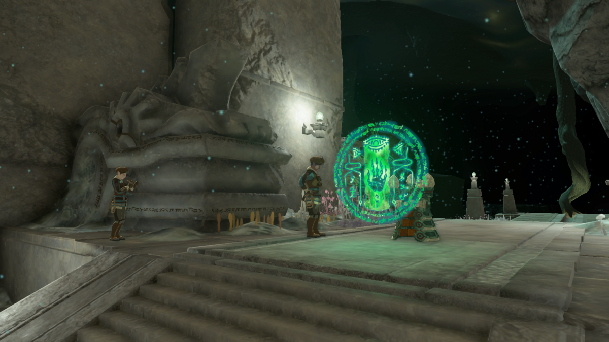

图：游戏实机截图（能量电池显示在林克腰间，扩容就是给它加格子，图片来源：Alphr，本站自托管图片）。
先算账：电池满级到底要多少结晶
能量电池的账先算清楚，免得刷到一半发现目标错了。林克拿到能量电池时自带 1 格（3 个能量井）；100 颗左纳乌能源结晶换 1 个能量井，3 个能量井合成 1 格。绿电上限 8 格（24 个能量井），也就是从初始状态再补 21 个能量井、2100 颗结晶；绿电拉满后可以继续兑换，把电量翻倍成蓝电，最高同样 8 格。从初始到满级蓝电一共要 45 个能量井、4500 颗结晶。按锻造兑换价折算，4500 颗结晶等于 13500 颗左纳乌矿，或者 225 颗大结晶、3375 颗大左纳乌矿——数字听着吓人，但刷法对了，结晶来得比想象中快。
| 结晶种类 | 等于多少普通结晶 | 怎么来 |
|---|---|---|
| 左纳乌能源结晶 | 1 | 锻造魔像：3 颗左纳乌矿换 1 颗 |
| 大能源结晶 | 20 | 锻造魔像：3 颗大左纳乌矿换 1 颗；打弗洛克斯、黑莫力布林、斯塔莫力布林掉落 |
| 巨型能源结晶 | 100 | 科加连战、地底宝箱、神殿 Boss 地底首次重战 |
两样东西别搞混：结晶与左纳乌电荷
先分清两个容易混的东西。左纳乌电荷（Zonai Charge）是消耗品，吃一颗立刻给电池充一段电，用完就没了；左纳乌能源结晶（Crystallized Charge）才是永久扩容的货币，攒够 100 颗去精炼所换能量井。两者长得像、名字像，但用途完全不同：电荷满地都是，靠打左纳乌魔像、开胶囊就能攒一堆，千万别拿左纳乌矿去锻造店换电荷——那是最亏的兑换。
兑换：锻造魔像 3 换 1
兑换只认锻造魔像（Forge Construct），位置在地底各处废矿里。兑换价是固定的：3 颗左纳乌矿换 1 颗结晶，3 颗大左纳乌矿换 1 颗大结晶（等于 20 颗普通结晶）。注意两点：一是每家店的库存有限（普通结晶最多 30 颗、大结晶最多 5 颗），卖空了就换一家废矿，或者过段时间再回来；二是大矿换大结晶最划算——15 颗大矿就能换够 1 个能量井，而同样 100 颗结晶用小矿换要 300 颗。中央大废矿的锻造店是最方便的一家，位置见下文路线。
精炼所：全游戏只有两处
换到了结晶，别急着找地方花——全游戏只有两处结晶精炼所。第一处在初始空岛，纳乔亚神庙旁边的洞窟里，游戏开局就能见到；第二处在监视砦北边、从天上掉下来的一块空岛碎片上，从监视砦鸟望塔望过去就能看到，翻过围栏走几步就到。两处的功能完全一样，平时用监视砦北边那处最顺路；精炼所的管理员魔像收下 100 颗结晶就给你 1 个能量井，当场生效，没有冷却。
刷法一：废矿巡回挖矿
最稳的来源是挖矿。地底到处都是左纳乌矿脉，矿脉分两种：普通矿脉出左纳乌矿，带金色闪光的稀有矿脉出大左纳乌矿——认准金光再动手。工具用融了石头的武器或锤子，别拿主力武器当矿镐；炸弹花一次能炸一片，适合矿脉扎堆的矿洞。巡回路线建议以中央大废矿为中心：从尼索伊树根出发，向西南到尼希卡亚姆树根，再向南就是中央大废矿，沿途矿脉加树根一次点亮，挖完在废矿的锻造店当场换结晶。地底一片漆黑，先开树根、带足光亮花种子再出发，否则一半时间都花在摸黑找路上。

图：游戏实机截图（地底深处的左纳乌遗迹，矿脉与废矿都在这一带，图片来源：Zelda Wiki，本站自托管图片）。
刷法二：打弗洛克斯与地底 Boss
想快就打 Boss。地底的弗洛克斯、黑莫力布林、斯塔莫力布林死后都会掉一颗大结晶（等于 20 颗普通结晶），弗洛克斯还会额外掉大左纳乌矿，地底的依盖队营地里也能捡到大结晶。弗洛克斯的打法：先用闪耀果附魔的箭射它眼睛把它打晕，爬到它背上打矿石弱点，被甩下来后继续用弓箭打头晕眩，循环几次就能无伤拿下。中央大废矿附近就有一只，尼希卡亚姆树根以南就能找到，血月之后 Boss 会刷新，可以反复刷。
刷法三：科加连战与宝箱
第三条路是科加连战。完成依盖队潜入后，科加大人会出现在中央大废矿，打赢他给一颗巨型结晶；之后他还会接连出现在海布拉、格鲁德、拉聂尔的废矿，每打赢一次都是一颗巨型结晶，外加新的左纳乌设计图。每个神殿 Boss 在地底的首次重战也会掉巨型结晶，地底宝箱里也藏着巨型结晶。开箱子、清废矿、打科加，这三件事顺路一起做，一趟地底下来经常能攒够一两个能量井。
哈里的取舍：先绿后蓝，别把矿全换了
作者视角的判断：结晶的用法按这个顺序排——先把绿电拉满 8 格，再考虑蓝电；大矿优先换大结晶，小矿随挖随换。理由是数字算出来的：8 格绿电已经够绝大多数造物（浮空摩托、飞艇、战斗载具）长时间运转，蓝电是把容量再翻一倍，对日常玩法属于过剩；等绿电满了再慢慢攒蓝电，毫无压力。另一条取舍是留矿：左纳乌矿不只是换结晶的货币，自动建造的蓝图复刻也要消耗左纳乌矿，缺零件时直接按蓝图造出来是要扣矿的。所以别一次把矿全换成结晶，手里常备几百颗矿，造物和扩容两不误。
五个最常见的翻车点
一句话总结
挖矿换结晶、打弗洛克斯拿大结晶、科加连战拿巨型结晶，100 颗换 1 格能量，先拉满 8 格绿电，蓝电慢慢来。